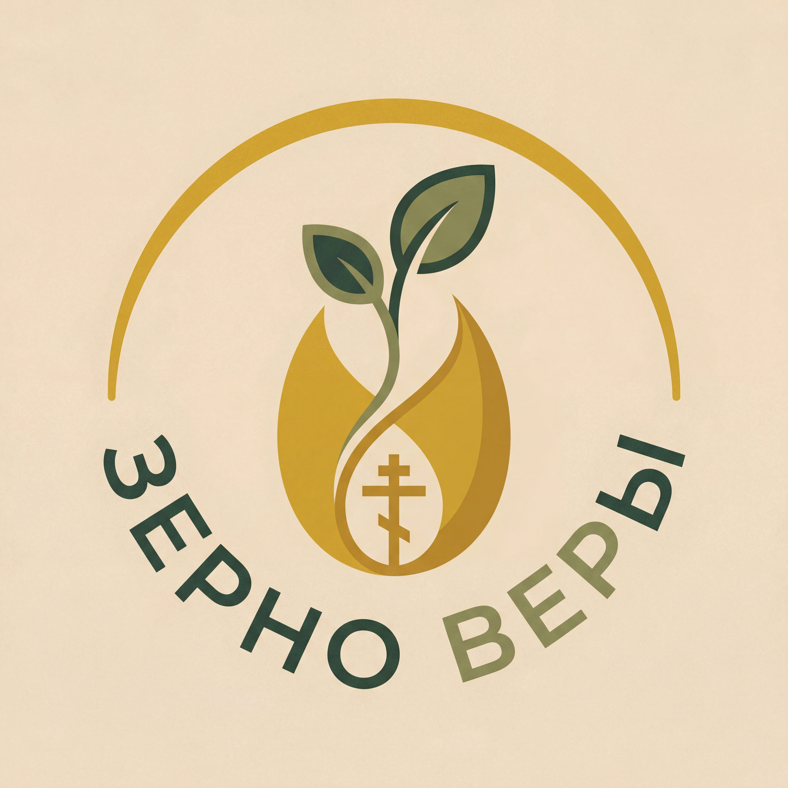

Семейный центр «Зерно веры» с 2007 года помогает семьям расти вместе — детям и родителям
Поддержать центрПри Свято-Екатерининском кафедральном соборе
По благословению митрополита Екатеринодарского и Кубанского Василия
Работаем с 2007 года — более 18 лет
АНО «Семейный центр «Зерно веры»
Руководитель центра — матушка Светлана Кравченко
Духовник центра — иерей Андрей Кравченко, настоятель Благовещенского храма Краснодара
Помочь прорасти зёрнышку веры в сердце каждого ребёнка и взрослого, чтобы оно проросло и приумножилось, став хлебом, питающим семью православную!
«Современной семье нужна не просто "развивашка" для детей, а надёжная среда, где растут все вместе — и дети, и родители»
1,5–4 года
Растём в сотворчестве и сказке
4+ года
Речь, музыкальный слух, координация через игру
4–6 лет
РКШ — интеллект + духовность
2–12 лет
Эмоциональный интеллект через игру с песком
Все возрасты
Искусство и красота
Все возрасты
Радость, чуткость, уверенность в себе
Школьники
Внимание, усидчивость, красота письма
7–16 лет (1–9 кл.)
Знания + духовно-нравственное воспитание
Бесплатные социальные проекты доступны всем участникам центра.
Современный педагогический инструментарий, авторские методики.
Говорить на одном языке с детьми, сохранить любовь в браке, преодолеть сложности
Музыкальные спектакли и праздники, где участвует вся семья — дети и родители вместе
Пространство, где можно быть уставшим, сомневающимся, ищущим — и найти единомышленников
Беседы о семье, браке, воспитании детей, духовном росте и личностном развитии
Центр выходит за пределы «развивашек» — мы даём полноценные полуторачасовые спектакли в главном концертном зале Краснодара на 1500 мест (Красная, 5).
Хороводы в фойе, царь и царица встречают гостей, пряники и калачи — живые традиции, которые мы не пропагандируем, а просто так живём.
«Мы пришли в центр, когда дочке был год. Начинали с «Крошек» — это было такое тёплое, семейное пространство! Сейчас она уже в хореографии, а младший сын тоже ходит на занятия. Для нас это стало вторым домом.»
«Мой ребёнок учится в семейной школе, уже 4-й класс. Это уникальное волшебное пространство рядом с собором — так вдохновляет и укрепляет людей, которые ищут веру и храм своей жизни.»
«У нас четверо детей, и все они в разное время посещали центр — «Воинство Христово», «Девичья краса», «Осьминотки». Это единственное место, где учат главному: любить, трудиться и отвечать за свои поступки.»
«Я с центром с 2010 года — прошли путь от «Ладушек» до семейной школы. За эти годы мы не просто нашли педагогов, мы нашли семью. Здесь наши дети растут в православной среде, окружённые любовью.»
Дети учатся главному — любить, трудиться, отвечать за поступки
Родители находят поддержку и единомышленников
Семья становится крепче через общие традиции и ценности
Запишитесь на бесплатную экскурсию по центру
Поддержите проекты центра ежемесячным пожертвованием